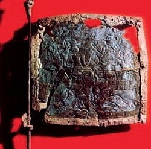
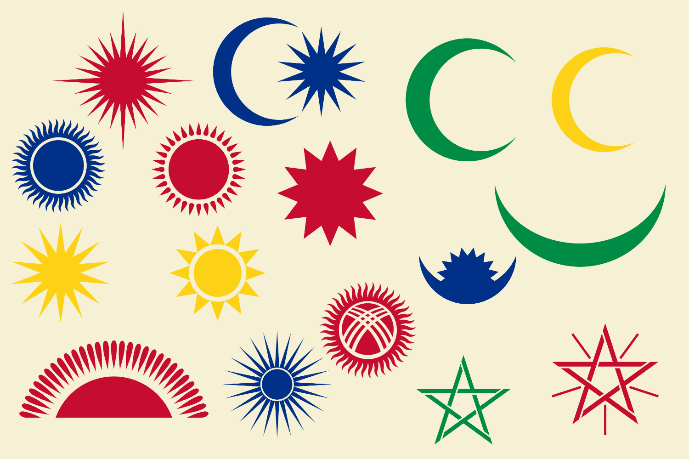
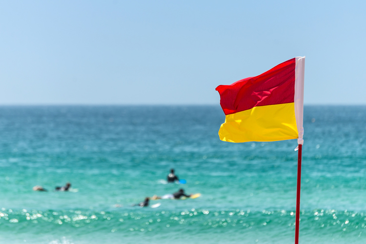

A flag is defined as a piece of cloth or similar material that is attachable to a pole or rope and is used as the symbol or emblem of a country or institution or as a decoration during public festivities. That’s a big definition! Let’s break it down a bit:
While flags are almost always made of fabric, this wasn’t always the case. The oldest flag discovered was a bronze flag dating back to 2400 BC in Iran, and cloth flags weren’t around until around 1100 BC. Additionally, some aspects of flags used to be painted on fabric rather than sewn on, like complex coats of arms.
Flags are typically hung from flagpoles, with the shortest edge against the pole. There are many different shapes for flags, but the most common is a rectangle or square.

Flag of Iran, c. 2400 BC
Flags can be used to symbolize nations, countries, regions, counties and even towns. They can represent groups of people, identities, religions, sports teams, or important people / royalty. A flag's shape, design, and colors are carefully picked to symbolize what the flag stands for. The most common symbols on national flags are stars, crests, coats of arms, crosses, the sun and the moon.

Some national flag symbols
While for most people, their first thought of flags will be those that represent countries / nations, flags can be used for practical purposes, instructions or decoration. For example, maritime signal flags stand for letters and numbers, red and yellow flags are used in sports to denote penalties, beaches use colored flags to determine open or guarded swimming areas, and railways use flags to direct trains. Flag garlands can be used as decoration at parties or other events.

A flag at a beach stating that the area is open and guarded
Today is...